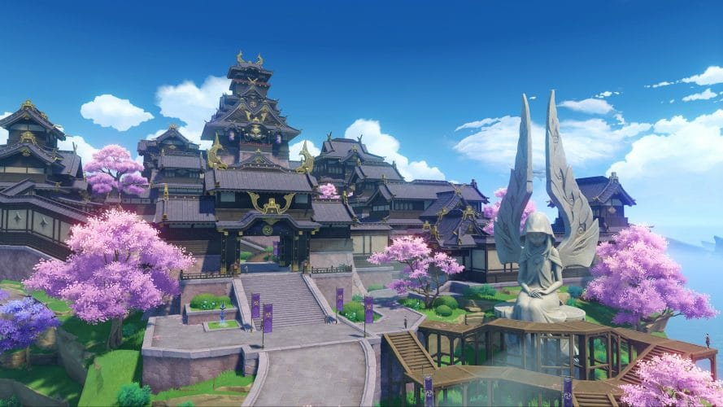

Inazuma est la troisème zone que le joueur rencontre. Elle est connue pour être une ville coupée du monde à cause de l'archon électro, aussi connu sous le nom de "Shogun raiden". L'architecture d'Inazuma nous fait penser a celle du japon d'avant-guerre. Dans cette troisième partie de la quête principale, nous découvrirons pourquoi la shogun raiden a fermer les frontière de son pays pour empecher les étrangers de rentrer.
Caractéristiques